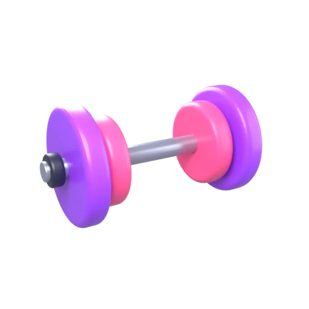

One short round of each, switching games every set. Then keep going with bonus sets.

Short daily workouts for your brain. Log in to save your progress and climb your batch leaderboard.
We save your scores, time played and feedback to run this pilot and improve Brain Gym. Classmates see only your first name and initial on the leaderboard.